dry toilet installation
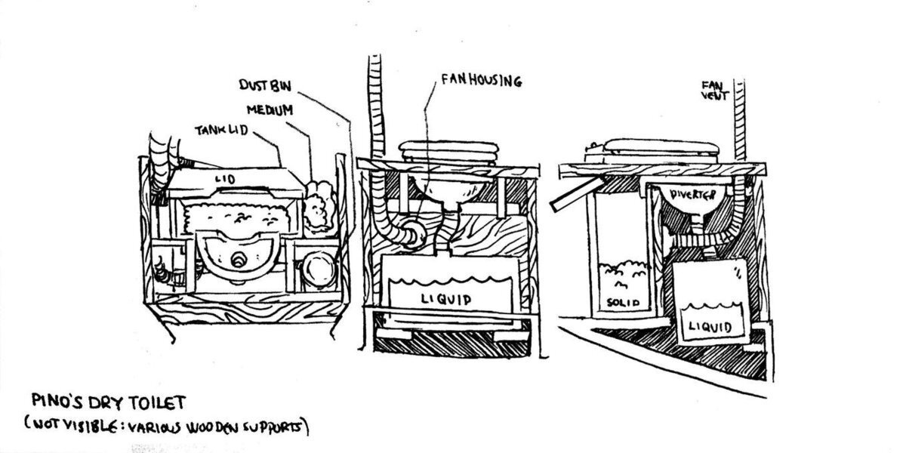21.04.10
North Saanich BC, Canada.
NOTE: Even if we finished this project, we update the page regularly with updates and observations (scroll to bottom of page to see those notes). This is a new system and we're still figuring out what works best for us.
Marine head issues
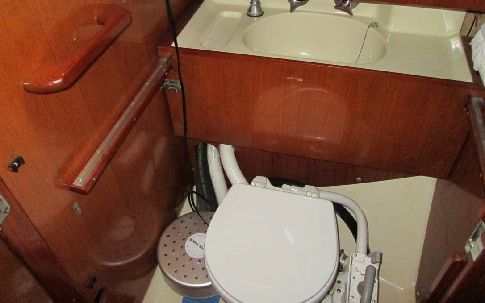When we bought Pino in 2016, we had a Jabsco marine saltwater head. It worked fine in the beginning, but then we started to have issues.
In the first week the macerator broke. We replaced it (-300$). The y-valve appeared stuck in one position (waste tank position), but we didn't think too much of it. We thought it needed some exercising (our surveyor too said this), and we eventually freed it. Then a few months later the joker valve failed, and the toilet kept back-flling. We replaced the arm of the toilet because we didn't know how old all of the components were. Changing these parts is a terrible, stinky affair and we didn't want to have to do it too much.
The system faired fine after that until the y-valve failed in 2018. The hoses, and all head components were completely backed up with shit. We could no longer 'pump' because as it turns out in 2016 we had not actually 'freed' the y-valve, rather the handle had snapped off inside and had been stuck in one position this whole time. On passage between countries, when we thought we were diverting waste directly overboard, we were actually feeding it into the tank, but it was also slowly filling up the hoses for the head>overboard discharge. We had to take everything apart to clean them. We cleaned all the hoses, and threw the y-valve away because evidently, it was unusable. We cleaned the shit and piss out of them while at anchor. That too, was a horrible affair that we aren't close to forgetting. We hooked everything back up, and it was fine for a while until a few months later the joker valve failed again (see hello fujisan for details).
While in Shimizu we changed the joker valve yet again. Not surprising, the seal failed once more the next year, but by then we had gotten rid of the holding tank, macerator and hoses to install a second water tank in that space. We wanted extra water for the passage east to Canada. We also removed the head sink, because we never used it. It required electricity to work and we no longer had a water pressure system aboard. We were already fine with washing our hands in the galley. We were quarantined in Minamiise, japan at the time because of covid-19, we used the onshore facilities in the marina and so not having a tank was not really a problem.
So, when we arrived in Canada in 2020 we had plans to change all the thruhulls and the ones in the head were very, very old and had become a serious liability. The constant toilet failings, and the ages thruhulls inspired our decision to put in a dry toilet. We removed the marine head and the rest of the system.
Building the dry toilet
We purchased a urine separator from Shit and Blossoms. Our friends were kind enough to keep the package for us at their house while we waited for our haul-out in early June. We had to haul Pino out of the water to remove the thru-hulls in the head, as well as the old toilet.
On June 4th we had Pino hauled out of the water for 10 days. We removed many thruhulls, the macerator, the raw water marine head and piping. Pino is so much lighter now! It is nice not to have the macerator thru-hull anymore, because it means we can use that locker to store gear! Prior to that, we couldn't put anything in there because it could damage the piping. That locker will now be reserved for tools. Pino went back in the water on the 14th, and we continued to build the rest of the dry toilet then.
We cut hole in the floor for the liquids tank to fit into. If we did not make a hole, the toilet would be too high for us to sit on. There was already a hole there, to give access to the—now gone—head thru-hulls. We removed the door, with plans to re-use it, and enlarged the hole to fit the tank. The previous hole in the floor was a trapezoid.
We fiberglassed (and painted) some supports on the sides of the hole to level liquids tank. If the tank sits on the bottom, it is crooked and may squish some of the hoses running underneath.
A vent is important on a dry toilet, because it helps to dry out the solids, removing smells, hastening composting and discouraging insects.
Our head used to have a solar vent, but it could not be closed. On boisterous passages, we often had salt water coming inside, and eventually, it killed the fan. So, we removed it, but it took us a long time to find an affordable and suitable replacement. While in japan, we temporarily put a used deckplate to plug the hole, but it too was leaky. We found a Vetus SS mushroom vent online this year, it looked immaculate, and more importantly it was sold for cheap (got it for 40$CAD). This vent has a green water shut off, ideal when underway.
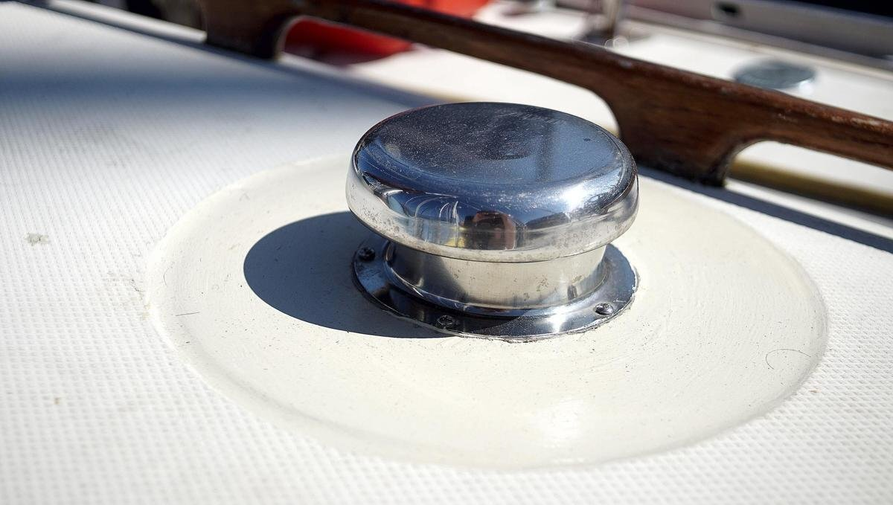It's diameter was smaller than the hole we already had, so we had to reduce its size. We cut a ring out of plywood, sized it to the hole, placed it into the hole, glassed it in, painted it and then drilled 5 small holes for the vent. We added butyl tape (bed-it) between the deck and the vent base. Goal is to route a pipe to that to a fan, opening onto the solids tank. With a fan, the contents of the toilet will shrink rapidly, allowing much greater capacity.
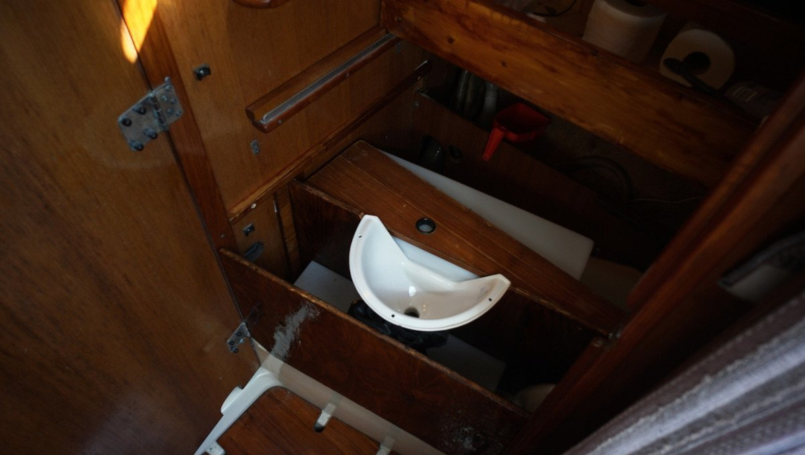We worked on some of the structural woodwork for the installation. The head has a very weird shape, it narrows in two directions. We did many back and forths between the workshop and the boat to get all the pieces to fit right. We used plywood from other projects, and found many useful bits from a discard bin in the workshop (even some pieces of teak!). We separated both the liquids and solids tank with a board, to provide stability, and added a board in the front (also for stability). We needed to build something that can take our weight, and that can withstand the constant motion that a boat is subject to.
We added three coats of instant coffee staining, and 1 coat of epoxy on all pieces of wood. We sanded the result lightly before adding the epoxy.
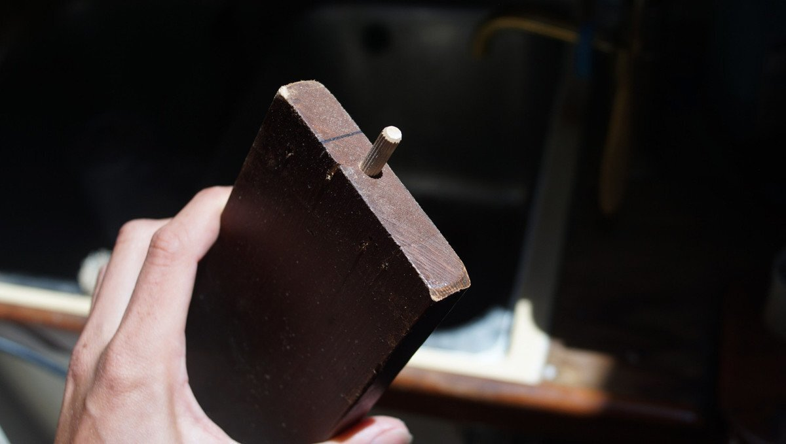For the toilet structure, we are trying a Shinto way of doing things, and building the whole thing without using nails or screws, using dowels. Using less metal on a boat is better anyway.
We placed the seat from our old marine head onto the board to test it out, and to draw the hole we would have to make. We drew the outline of the circle, with a 1.27 cm (1/2 in) of extra padding. We did not want the hole under the seat to line up perfectly with it (to avoid messy accidents). We cut a hole in the lid with a jigsaw, epoxied it (hanging helps to coat all sides on the same day). We chose a very bad day to do epoxy. It was 34 C outside, too hot to do this sort of work, and the mixture would solidify way too quickly. We wasted a lot of resin and hardener because of this. We had to make 3 half batches to finish the lid, and each time it was a race against time, against the inevitable chemical reaction, trying to finish the work before the mixture would be rendered unusable. In the end, we had 3 containers with 3 shallow pools of hardened epoxy... what a waste. We could have waited, but this week the temperature is going to be far worse (forecast is for 38 C in two days). We would hate to imagine how quickly a resin and hardener mix would set at such a temperature.
We fixed the seat and cover on the top board. Happy we got to re-use at least one part from our old marine head. It has a good, sturdy design, and the fastening bolts are thick plastic. We also cut out a shape on the front of the solids tank to accommodate the lip of the urine diverter. The tank is plastic, so it was easy to cut with a hacksaw. We sanded the edges down with a metal bit, careful not to eat too much of the material away.
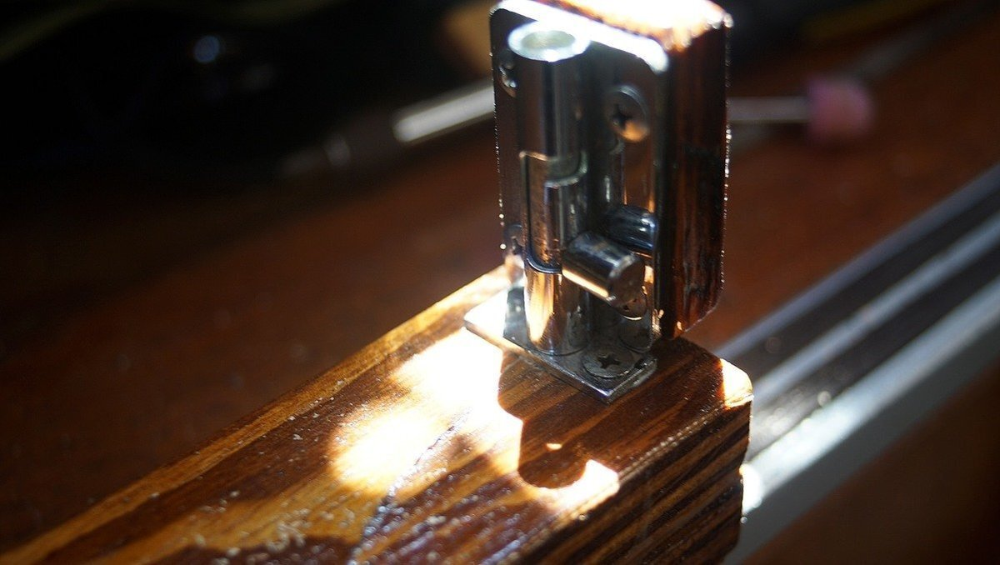The lid (where the seat is attached) needs to be removable, but we also need to secure it while underway. We found 2 door bolt locks that we can use to hold it down. We built little bases for them today, and will secure those to the wall.
We then screwed in the piano hinge onto the edge of the lid, which we'll attach to another piece of wood that will be used to hold the entire lid down using the two bolt locks. The whole lids need to be removable because we need full access to the solids tank underneath to empty it.
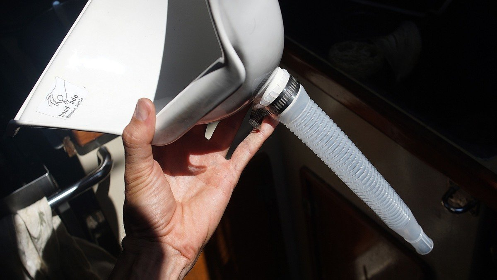 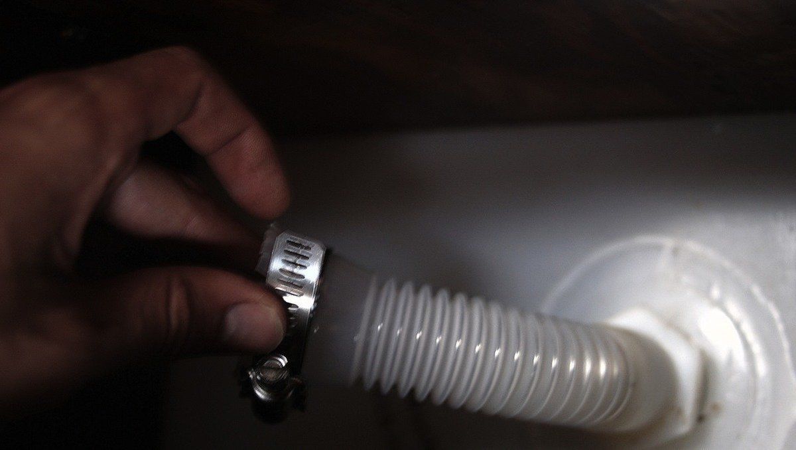We bought some plastic jerry cans in Japan for water, they with these plastic nozzles, used to transfer the water. We weren't using them, we have a self-priming jiggler pump that we prefer to use to transfer liquids. We found that this piece was perfect to use as the tube between the diverter and the liquids tank. We had to cut slits into the top to fit it to the exit of the diverter, we also applied a bit of heat with a heat gun to stretch out the material. The other end fits into the liquid tank. We squeezed the thicker, 'ribbed' part of the pipe through the tank fitting, and it makes a tight, tight seal.
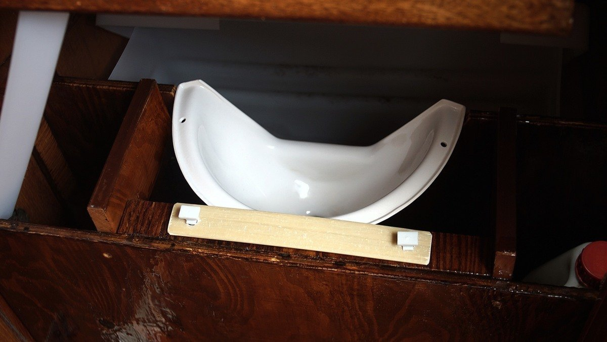Secured the urine diverter by pressure alone. We made holes in a part of an old mainsail batten we found, made matching holes in the wood underneath and used two long plastic screws to tighten the batten down. We added little rubber shims where the batten meets the porcelain, so as to not crack it.
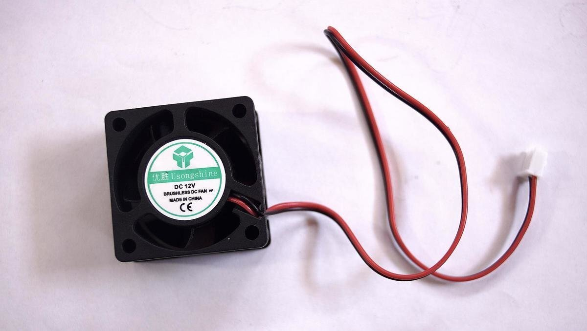Adding a fan to a dry toilet is important, as it hastens the composting process, and keeps smells to a minimum. We had to order this fan online. We wanted a tiny one that would not use up too much power.
Took us a while to find the right parts, but we built a housing for the fan using a drain and trap connector. It comes with two hose clamps that we can use to tighten around the fan. We put foam padding all around it so it sits tight.
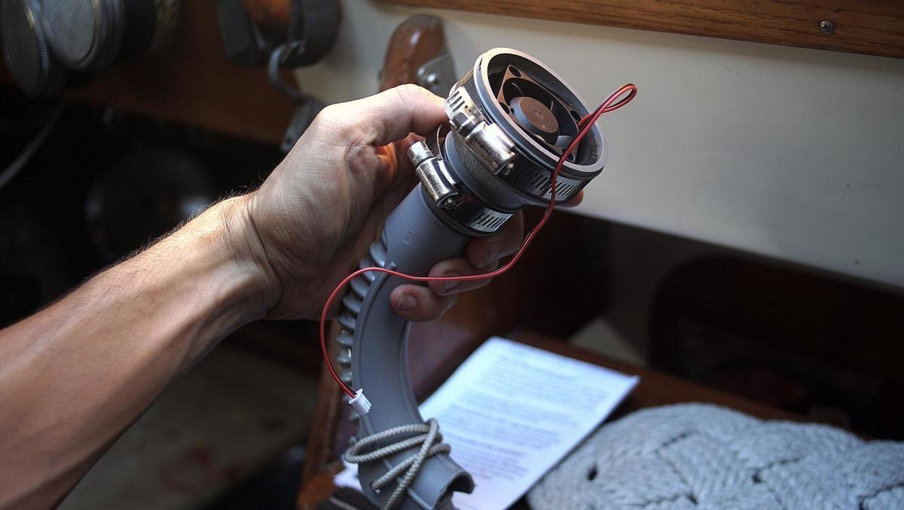Then, we secured the other end of the connector to a washing machine discharge hose (grey hose). It all worked out quite nicely. We drilled holes in the solids tank and bolted the fan onto it, and the hose-clamped the housing onto the fan.
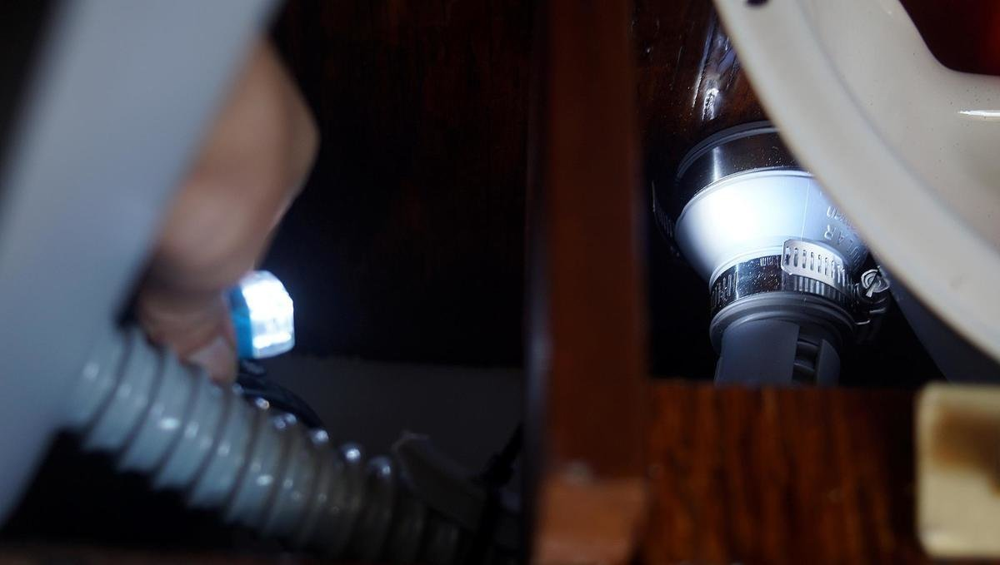We had to drill extra holes to pass the hose through.
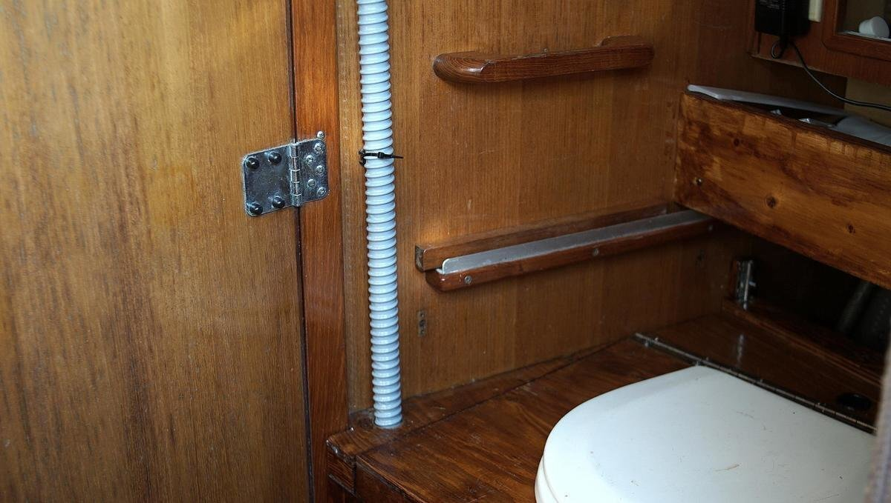Now, we need to find a way to connect the top end of the hose to the vent, so that the air and moisture from the tank can be sucked directly outside. We also need to wire the fan, and run the wires all along the boat. We're not sure how we're going to do that yet... running wires through walls is always tricky.
21.07.28
Wahoo! Everything is connected, the fan is working and our dry toilet project is complete.
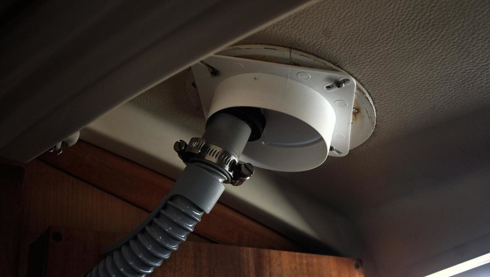We also connected the hose to the outside vent using a pipe vent to stop drafts in houses. The outside(square) diameter fits the hole in the ceiling, and even matches the holes we had up there (we used to have a wooden trim). The inner circle fits inside our ceiling perfectly, and the little rotating flap inside is a good way to fit a hose through. We had to carve a hole in the flap for the hose to slide into, using a pair of heavy duty scissors. It is unfortunate that the vent is a square, but it is what it is, and what is important is that it seals the space.
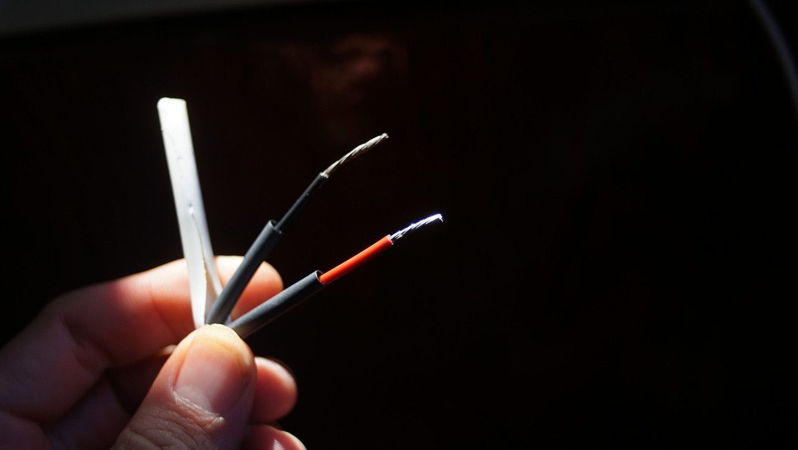We also connected the fan, routing the wires through the walls and over to the breaker panel. Routing wires inside walls is always tricky. There are a lot of older wires in there that the previous owner did not bother removing, and all passages are tight, made tighter by many thick braids of wire. The boat was a great big mess, with lockers, ceiling and wall panels open... all that just to connect a tiny fan. Now it's done. The little fan is working. We tested it prior to installing it, and also made sure that it was facing the right way, so it would suck air out instead of in (important!).
This concludes our dry toilet installation.
Building a dry toilet was more work than we had anticipated, but we still prefer it over the ready-made models. We learned tons by doing it, and now our toilet is perfectly suited to our space. The pandemic has pushed more people into boat and van living (to travel within their own countries) and towards simple systems. Looking at the Nature's Head website, they've had a 8 week waiting list for ages. It's either you wait for the thing, or you build the thing.
Dry toilets are simple to use and have few parts, but it doesn't mean that they are simple to build. Simple is hard, it costs time, and requires a ton of creativity.
Dry Toilet Updates and Observations
21.08.25. We filled the toilet for 3 weeks, and realized that this was its limit. The solids tank became too heavy and too awkward to remove from the space. Our tank is large, but it being large is also a problem for emptying it seems. We also tried to churn after every deposit, which we think helped areate the mix.
21.10.09. We started having fly problems. Flies would come in through the window and somehow found their way inside the solids tank, then they started duplicating which was... not great. We thought the lid was tight enough, but they found a way in through a gap we found we couldn't close. We had to toss the whole thing, because those bastards were well-settled in there. It's possible we didn't add enough medium, which attracted flies.
21.10.20. We washed the bin, bleached it, and decided to try to line it with a compostable bag to make disposal easier. A bag isn't ideal, but it makes clean-up easier and we don't have to remove the whole bin out of that very restricted space.
We also decided to try and stop churning, and to add medium after every deposit. We found this worked better. The bin smelled a little before, especially after a fresh deposit, but now we don't smell a thing, ever. We also tried another base medium, wood shavings sourced from a woodworking school in gabriola. We'd been using fir bark mulch before, sourced from a landscaping company, and think that maybe the grind was just too fine. The loose shavings work much better at covering up smells.
We also tried not using the fan to see if it was really necessary... and after our test period, we realized that yes, it is important. Even no-churn systems need areation, otherwise there is too much moisture build-up and the humanure will start to develop mold (happened to us). It might also have been because we were using coffee grounds as extra cover, and that the grounds were not dry enough. We dried them in the sun in the summer, but we think we didn't leave them out there long enough. Coffee grounds can be a good cover, but it needs to be completely dry. We had no issue if using 100% wood shavings, or if we added ashes. We had limited ashes because it was summer so we couldn't rely on that entirely. But it would be a good option in the winter when our woodstove gets more use.
22.01.07. As a test, we've been using a mixture of wood ash and coffee grounds as a cover material for the dry toilet aaand, so far so good? It's winter, and we run the woodstove more often and still drink coffee everyday, guaranteeing us plenty of material. We keep the fan going most times, to try and avoid mold, again, so far so good. We dry the coffee grounds thoroughly, and break up the clumps before adding it in. Clumps are really no good, but once the grounds are broken up they work well at covering deposits!